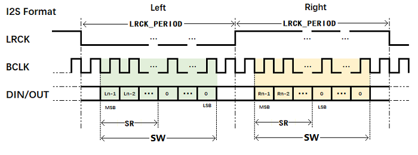
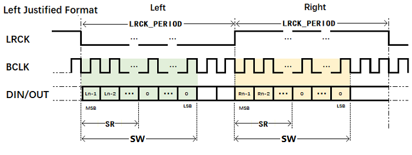
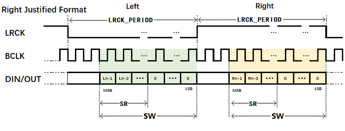
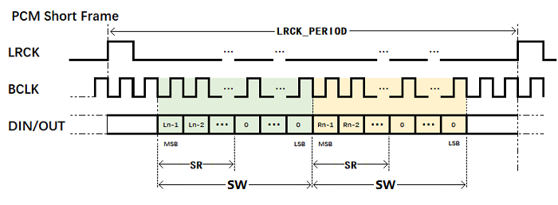
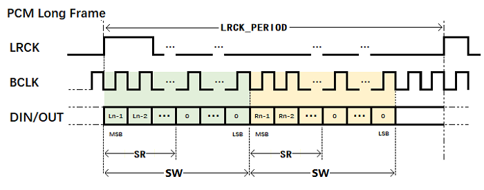

10.9.2. 功能描述¶
10.9.2.1. I2S mode¶
I2S Format
图 10.72 I2S Format¶
I2S Format可以通过两通道（左右声道）的TDM，Mode SEL = 0x1实现，另外需要配置寄存器T/RX0_OFFSET=1，使得采样数据滞后LRCK一个BCLK的时间长度。LRCK可通过寄存器LRCK_POLARITY选择左右声道的有效电平，上图为默认值，低电平为左声道，高电平为右声道。
图中关键参数具体含义如下：
LRCK_PERIOD：LRCK传输数据的时间长度，I2S模式下指的是左声道或右声道的时间长度。
SW：Slot Width，通道长度，指的是最大可采样的数据长度。
SR：Sample Resolution，采样点精度，指的是实际采样的数据长度。
上述三个参数可以通过配置相应寄存器来满足具体的需求，所有I2S mode以及PCM mode均适用。
需要注意的是当SR小于SW时，超出SR长度的数据无法采集且会被填充，填充内容可通过寄存器SEXT配置（一般为0）。
Left Justified Format
图 10.73 Left Justified Format¶
Left Justified Format可以通过两通道（左右声道）的TDM，Mode SEL = 0x1实现，另外需要配置寄存器T/RX0_OFFSET=0，使得采样数据无需滞后LRCK。LRCK可通过寄存器LRCK_POLARITY选择左右声道的有效电平，上图为默认值，低电平为左声道，高电平为右声道。
Right Justified Format
图 10.74 Right Justified Format¶
Right Justified Format可以通过两通道（左右声道）的TDM，Mode SEL = 0x2实现。LRCK可通过寄存器LRCK_POLARITY选择左右声道的有效电平，上图为默认值，低电平为左声道，高电平为右声道。
10.9.2.2. PCM mode¶
PCM Short Frame Format
图 10.75 PCM Short Frame Format¶
PCM Short Frame Format可以通过两通道（左右声道）的TDM，Mode SEL = 0x0实现，另外需配置寄存器LRCK_WIDTH = 0（LRCK产生一个BCLK周期长度的脉冲），以及LRCK_POLARITY = 0（LRCK的下降沿开始进行数据的传输）。
PCM Long Frame Format
图 10.76 PCM Long Frame Format¶
PCM Long Frame Format可以通过两通道（左右声道）的TDM，Mode SEL = 0x0实现，另外需配置寄存器LRCK_WIDTH = 1（LRCK产生两个BCLK周期长度的脉冲），以及LRCK_POLARITY = 1（LRCK的上升沿开始进行数据的传输）。
10.9.3. 编程指南¶
对于播放48kHz、16bit的音源数据，采用I2S格式进行传输，初始化配置如下：
接口信号配置:
I2S_CTL寄存器
bclk_out = 1; // BCLK为输出信号
lrck_out = 1; //LRCK为输出信号
dout0_en = 1; //DOUT0输出使能
格式配置，I2S格式:
I2S_CTL寄存器
mode_sel = 0x1; //I2S模式
I2S_FMT0寄存器
lrck_polarity = 0x0; //LRCK低电平为左声道，高电平为右声道
lrck_period = 0x1f ; //在I2S模式下，左/右声道的数据时间长度，这里配置为32 * BCLK
bclk_polarity = 0x0; //DOUT在BCLK的下降沿发送数据
sr = 0x3; //采样点的数据精度为16bit
sw = 0x7; //通道位宽设定为32bit，配置与lrck_period一致
I2S_FMT1寄存器
tx_mls = 0x0; //最高比特MSB先发送
sext = 0x0； //在sr < sw的情况下，在低位补0
tx_pdm = 0x0; //线性PCM数据
I2S_TX0CHSEL寄存器
tx0_offset = 0x1; //1x BCLK偏移，实现I2S格式
tx0_chsel = 0x1; // TDM采用2x 通道，1路通道作为左声道，1路通道作为右声道
tx0_chen = 0x3; //TDM使能通道0和通道1
I2S_TX0MAP1寄存器
tx0_ch0_map = 0x0; //通道0映射FIFO读取的第一个采样点，为左声道数据
tx0_ch1_map = 0x1; //通道0映射FIFO读取的第二个样点，为右声道数据
对于播放48kHz、16bit的音源数据，采用PCM格式Short Frame进行传输，初始化配置如下：
接口信号配置:
I2S_CTL寄存器
bclk_out = 1; // BCLK为输出信号
lrck_out = 1; //LRCK为输出信号
dout0_en = 1; //DOUT0输出使能
格式配置，PCM Short Frame格式:
I2S_CTL寄存器
mode_sel = 0x0; //PCM模式
I2S_FMT0寄存器
pcm_fmt = 0x0; //Short Frame模式
lrck_polarity = 0x0; //short Frame模式下对应LRCK的下降沿触发数据传输
lrck_period = 0x3F; //总的数据长度为64x BCLK
bclk_polarity = 0x0; //DOUT在BCLK的下降沿发送数据
sr = 0x3; //采样点的数据精度为16bit
sw = 0x7; //通道位宽设定为32bit
I2S_FMT1寄存器
tx_mls = 0x0; //最高比特MSB先发送
sext = 0x0； //在sr < sw的情况下，在低位补0
tx_pdm = 0x0; //线性PCM数据
I2S_TX0CHSEL寄存器
tx0_offset = 0x1; //1x BCLK偏移
tx0_chsel = 0x1; // TDM采用2x 通道，1路通道作为左声道，1路通道作为右声道
tx0_chen = 0x3; //TDM使能通道0和通道1
I2S_TX0MAP1寄存器
tx0_ch0_map = 0x0; //通道0映射FIFO读取的第一个采样点，为左声道数据
tx0_ch1_map = 0x1; //通道0映射FIFO读取的第二个样点，为右声道数据